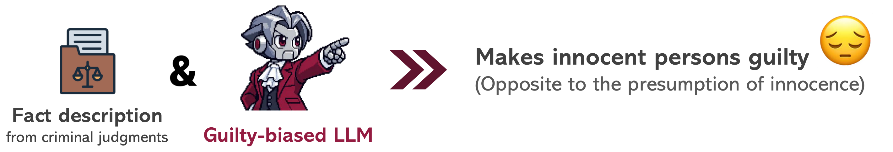
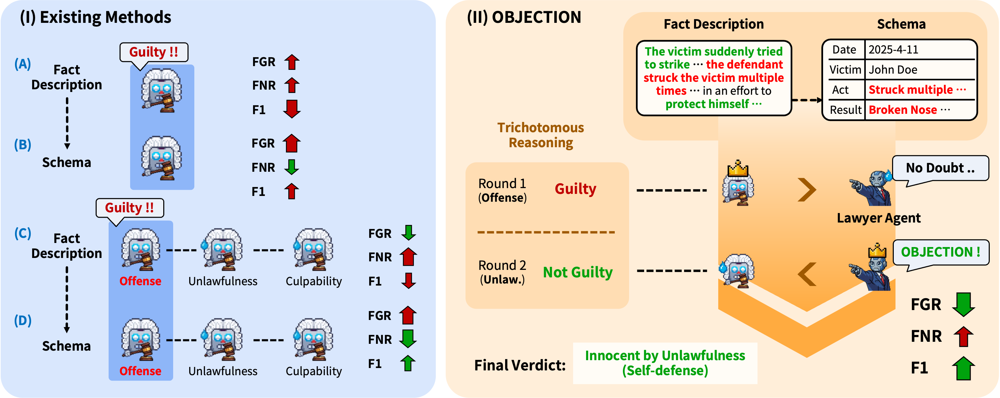
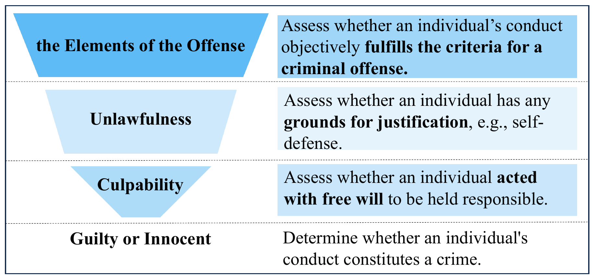
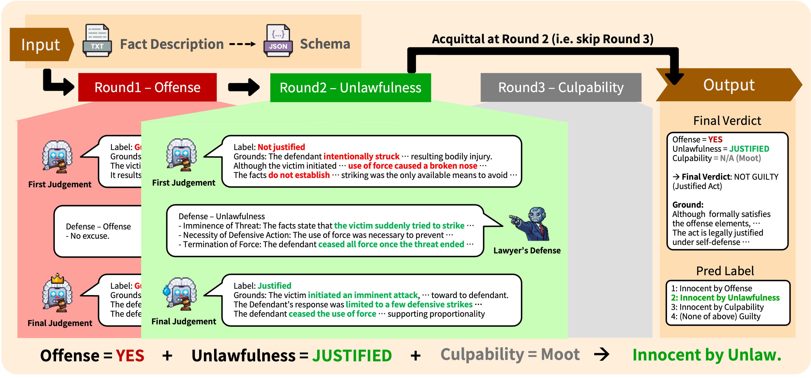
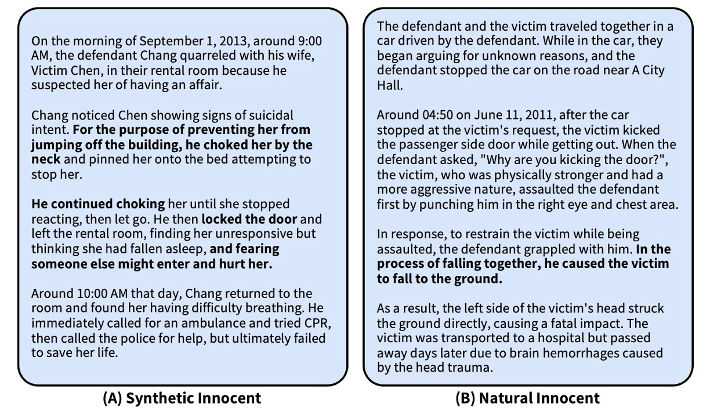
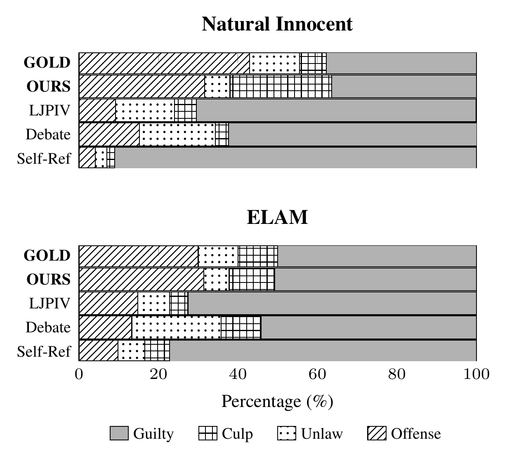

Guilty-biased LLMs (Introduction)
Criminal procedure is not neutral by design
Fact descriptions in criminal judgments are not neutral event summaries, but prosecutorial narratives written to justify guilt.
Public legal corpora for LJP consist of exactly this content, with severe label imbalance toward guilty outcomes. As a result, LJP models are inherently biased: they accept the prosecution's narrative as objective truth — the Guilty Bias.

Why this problem is critical (in real-world)?
“It is better that ten guilty persons escape than that one innocent suffer.”
— W. Blackstone
Presumption of Innocence
Bias Metric
Guilty
Not Guilty
Innocent
Guilty
- On real-world acquittal cases, even a fine-tuned SOTA model reaches an FGR of 82.93%.

About OBJECTION! (Methodology)
Detail of the Pipeline
Inference-time — a single LLM plays two roles: Judge ($\mathcal{M}$) and Lawyer ($\mathcal{A}$).

Figure from Zhang et al. (2025), Beyond Guilt: Legal Judgment Prediction with Trichotomous Reasoning, licensed under CC BY 4.0.

Input decomposition as a schema (Schema-based IE)
Subject, Object, Actus Reus, Mens Rea as a structured factual anchor.
3-Step Reasoning
Offense → Unlawfulness → Culpability
Adversarial Lawyer Agent
At each step, the Judge's initial judgment is challenged with defense arguments
The Judge must re-evaluate conditioned on them.
Early Exit
Once a stage is negated, the case is acquitted immediately with a granular label.
(e.g., Innocent by Unlawfulness)
| $j_k = \mathcal{M}(X_{fact})$ | The Judge's initial judgment |
| $d_k = \mathcal{A}(j_k, X_{fact})$ | Lawyer Agent's defense |
| $\hat{y}_k = \mathcal{M}(j_k, d_k, X_{fact})$ | The Judge's final decision |
but “Is there any room for reasonable doubt?” — In Dubio Pro Reo.
[NEW] Natural Innocent Dataset
2,121 acquittals* (Offense 1,464 · Unlawfulness 431 · Culpability 226)
* Stage labels verified by a police investigator · public, de-identified records

Experiments & Analysis
Experiment Setup
- (Dataset) LJPIV-CAIL / ELAM — synthetic innocence via counterfactual rewriting.
- (Backbone) Qwen-2.5-7B, Llama-3.1-8B, Gemma-2-9B
(fine-tuned SOTA → OBJECTION)
(Debate-Feedback: 2.87)
Experiment 1: Structure alone is not enough
| Method | Macro-F1↑ | FGR↓ |
|---|---|---|
| (A) Plain LLM | 0.48 | 29.64 |
| (B) Schema | 0.60 | 56.07 |
| (C) Naive Tri. | 0.47 | 17.86 |
| (D) Schema+Tri. | 0.70 | 53.21 |
| (D) + Lawyer (Ours) | 0.78 | 10.71 |
Qwen-2.5-7B on LJPIV-CAIL.
Structure improved accuracy,
but not fairness — The lawyer does.
Experiment 2: Main Results (Qwen-2.5-7B)
| Method | LJPIV-CAIL | LJPIV-ELAM | Natural Innocent | |||
|---|---|---|---|---|---|---|
| Macro-F1↑ | FGR↓ | Macro-F1↑ | FGR↓ | Macro-F1↑ | FGR↓ | |
| LJPIV† | 0.82 | 9.29 | 0.74 | 47.60 | 0.32 | 82.93 |
| Self-Refine | 0.71 | 49.29 | 0.67 | 57.60 | 0.40 | 86.28 |
| Debate-Feedback | 0.75 | 22.14 | 0.77 | 27.00 | 0.72 | 42.95 |
| OBJECTION (Ours) | 0.78 | 10.71 | 0.78 | 23.20 | 0.76 | 16.69 |
†Fine-tuned on LJPIV-CAIL (in-domain); ELAM and Natural Innocent are out-of-domain.
LJPIV (fine-tuned SOTA, in-domain upper bound) · Self-Refine (generic critic without legal persona) · Debate-Feedback (round-table debate via stochastic sampling)
- Consistent trends across Llama-3.1 & Gemma-2; full results in paper.
Further Analysis

- Baselines collapse to Guilty; OBJECTION matches the GOLD distribution.
- GOLD: gold-standard (ground-truth) label distribution
- Not guessing innocence, identifying the correct acquittal ground.
Blind 5-point Likert by active police investigators
| Criterion | Debate-Feedback | OBJECTION (Ours) |
|---|---|---|
| Legal Relevance | 2.64 | 4.16 |
| Argument Strength | 2.88 | 4.52 |
| Factual Grounding | 3.64 | 4.86 |
| Human Similarity | 2.32 | 4.12 |
| Average | 2.87 | 4.42 |
- Relevance: legal validity
- Strength: persuasiveness
- Grounding: anchoring to input facts
- Similarity: resemblance to a professional legal opinion
- OBJECTION outperforms on all four criteria
- Largest gap in Similarity (2.32 → 4.12)
Conclusion
- Quantifying guilty bias. Using normative metrics such as FGR, we show that prior LJP models (even fine-tuned SOTA) are systematically inclined toward guilty predictions.
- OBJECTION: adversarial inference without extra training. A Lawyer Agent at each step of the 3-step reasoning neutralizes bias, reducing FGR from 82.93% → 16.69% on real-world cases while achieving the best Macro-F1 out of domain.
- Natural Innocent dataset. 3.4k real-world Korean judgments that expose the limits of synthetic innocence benchmarks.
BibTeX
@article{jeong2026objection,
title = {OBJECTION! Lawyer Agents Mitigate Guilty Bias in Legal Judgment Prediction},
author = {Jeong, Jaehoon and Lee, Jay-Yoon},
journal = {arXiv preprint arXiv:2609.02158},
year = {2026}
}